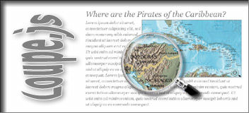

|  |
Loupe.js and Loupe.png allows you to add a loupe (magnifier) to images on your webpages. It uses unobtrusive javascript to keep your code clean. It works in all the major browsers - Mozilla Firefox 1.5+, Opera 9+, IE 6+ and Safari. On older browsers, it'll degrade and your visitors won't notice a thing. |
Download "loupe.js" and include it into your webpages HEAD section.
// only if the image "loupe.png" is not in the current path
<script type="text/javascript">var loupePath="imagepath/";</script>
// else only this lines...
<script type="text/javascript" src="loupe.js"></script>
<!--[if gte IE 6]>
<script type="text/javascript">var loupePath="vml/";</script>
<script type="text/javascript" src="vml/loupe.js"></script>
<![endif]-->
To add a loupe just set the event onload="initLoupe(this.id);" to an div surrounded image.
<div>
<img id="..." onLoad="initLoupe(this.id);" src="..." width="356" height="205" alt="...">
</div>
Shows what "loupe.js" does.
In older browsers, the script degrades and your visitors won't notice a thing.
It's not advisable to use the script multiple times on the same page.
Loupe.js is distributed under this LICENSE. License permits free of charge use on non-commercial and private web sites only.
There is also a Commercial Software License available.
Images used are copyrighted and are used for demonstration only.
cvi.netzgesta.de also visit CVI-lab, S5 Reloaded and AJAX-FilmDB